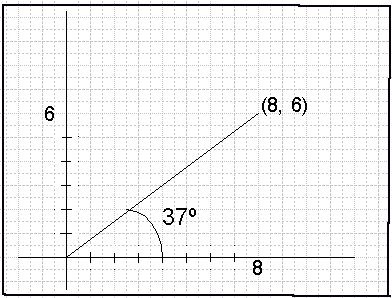

& Calculators
|
& Calculators |
Background Comments
One of the more common lessons in measurement in middle school math classes is that of measuring the number of degrees in an angle. This, of course, implies the use of a fairly technical instrument, for students of this age anyway: the protractor. All those strange numbers going in two different directions is certainly more complicated than an ordinary ruler. But once that aspect is taken care of, there still remains the matter of homework exercises for practice. One thing that has always bothered me is that when a textbook shows several examples of angles to be measured, a big problem emerges. The angles are often rather hard to measure, from a physical standpoint. By this I mean they are often too small to fit the protractor being used; or they are positioned too close to the center of the opened book, hence it is difficult to make the protractor lie flat, etc. The obvious solution is to have the angles drawn on flat pages. This implies one of two things: a separate workbook or lots of single- sheet photocopies for the teacher to prepare. But wait! There's another way. Why not have the student draw his own angles on his own paper before measuring? It certainly would give him added practice with the concept. But wait again! How would one know if all his work was being done at least reasonably well? With a large class doing such a home- work each with their own angles of all sizes, it would be a nightmare to evaluate, even in a general way. A solution to that dilemma would be: design a way to "force" the students to make angles of a size that the teacher knows in advance what the degree measure will be. This can be done. Watch.The Lesson
About five years ago, I designed a lesson that involves three unusual allies: graph paper, the protractor, and a scientific calculator. Here is how it's done. 1. First we will draw our angle on graph paper, using a set of coordinate axes. 2. Next we will measure it with our protractor. 3. Then we will use our calculator to check our measurement accuracy. Example: Measure the angle formed by the x-axis and a ray that passes through the point (8, 6). Solution: The angle has been drawn on a pair of coordinate axes, as shown below. When we measure it, we see that it is approximately 37º. But how can the student be sure that the answer is correct, or at least reasonably close? It is sometimes difficult to handle that instrument. So I told my students to get out their scientific calculators and do this key sequence: 1. Press 6 [÷] 8 [=] (Result: 0.75) 2. Press [Inv], or [2nd], or [Shift] (depending on one's model) 3. Press [tan]. The result in the display is 36.869898, which rounds to 37 (to the nearest whole number), or 36.9 (to the nearest tenth). Our work was close enough to be acceptable. And that, in a nutshell, is all there is to it. Simple, direct, and multi-faceted in approach. We used skills in plotting points in the coordinate plane, measuring with protractors, and utilizing some unusual keys (for middle school students anyway) on a calculator. By the way, no mention is made about the trigonometry concepts that are implied in the calculator checking process. My experience showed that the kids could accept the procedure for what it was: a way to find the number of degrees in the angle. They were instructed that in Step #1 that it was always "divide the y-value of the ordered pair by the x-value".Homework Sample
Exercises: Draw the angle first; measure it with your protractor; and finally do a calculator check. 1) (7, 5) 2) (2, 9) 3) (10, 3) 4) (6, 11) 5) (14, 12) 6) (15, 15) tt(1/29/94)
| Comments? Send e-mail. | Back to top | Go back to Home Page | Go back to Contents |